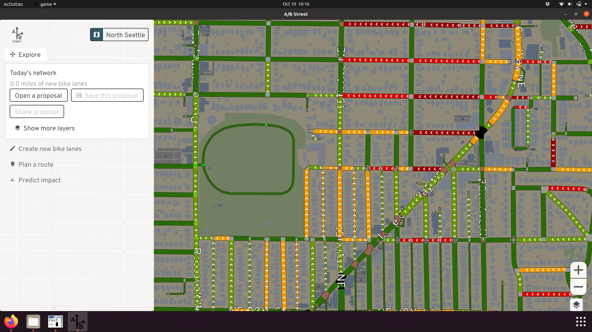

User guide
You can use the different parts of this tool in any order you like, but the recommended flow is:
- Start by exploring the existing bike network in your city. Try zooming in to see detail about how street space is currently used!
- Go plan a trip to see what trade-offs between safety and speed you might experience biking today. You can save these trips to later evaluate your proposal.
- Create new bike lanes where you think they should exist!
- Check your trips again, to see if the most direct route is now safer.
- Use the "predict impact" mode to estimate how many other people might make use of your changes.
- Upload your proposal, then share on social media or start a conversation with your local city government or advocacy groups!
General tips
This software can run in your web browser without any installation. If the loading times are slow, install and run for a much faster experience, especially for larger areas. There's no support for mobile devices yet.
You can move around the map just like most digital maps. Click and drag to pan around. To zoom in, just scroll with your mouse or touchpad, double click, or use the buttons in the corner. This map shows much more detail when you zoom in -- give it a try!
The map works anywhere in the world. You can use the button at the top to change regions. Many cities have already been set up. If you're using the downloaded version, you can also import another region yourself. (Sorry, no web support for that yet.) If you want any help importing your region, file an issue or contact dabreegster@gmail.com.
Exploring the map

Types of bike infrastructure
If you open the layers in the corner, you'll see that bike infrastructure is divided into 4 categories. Dedicated trails are usually the most segregated from motor vehicles, and are often shared with people walking. In most cities, most bike facilities are directly on the street, alongside traffic. Protected bike lanes have some kind of buffer protecting cyclists from other vehicles -- sometimes concrete barriers, but often just about a foot of paint and some flexible bollards. Painted lanes have no protection from traffic; cyclists just have to trust vehicles not to cross a thin line of paint. Often painted lanes are located very close to street parking, forcing cyclists to ride in the "door zone," where somebody in a parked car might suddenly open their door and block the lane.
Greenways are streets where vehicles and cyclists share the same space. The city has designated these as low traffic, and there might be small traffic calming measures to discourage high-speed traffic -- like speed bumps, slaloms, curb bulbs, small traffic circles, and signage. These routes have different names across the world -- Stay Healthy Streets, neighborhood greenways, low-traffic neighborhoods, slow streets, etc. In a place like Seattle, these streets are very narrow because of cars parking on both sides, so when a cyclist and an oncoming vehicle need to pass each other, both have to slow down. In the author's opinion, it doesn't feel like the cyclist really has any sort of priority here.
Finally, some cities use "sharrows," or painted markings, on general-purpose lanes to indicate to drivers that they're supposed to share the road. These aren't reflected in the map at all, because they're not real infrastructure. Studies have shown they can actually make things worse.
Understanding elevation layers
Many places are flat or have widespread adoption of e-bikes. But in cities like Seattle and San Francisco, the city is arranged on steep hills, which can deter people from cycling for commuting. If you open the layers panel, you have two ways to understand how the topography affects biking.
The elevation layer draws a contour map, drawing higher elevation in red. You can quickly get a sense of how the city is arranged, and discover unexpected flat "shortcuts" when the streets aren't aligned to the hills!

You can also check the incline on individual street segments. The arrows point uphill.

Note the elevation data is high-quality for Seattle, but has issues in the rest of the world. And the estimated incline on bridges is usually wrong!
Planning a trip
Use this mode to plan a cycling trip. Just click the map to add waypoints, or drag the waypoints to adjust.

Saving trips
You can name each trip, then save it. This is useful to define "test cases" for evaluating how well the bike network serves the trip. The sample trips could be based on your own commute, or trips you know are common -- like from a university to the popular night-life district.
Preferences
When you plan a bike route, you usually have to make a trade-off between time, hilliness, and stress. The fastest, most direct route often forces you to ride alongside high-speed traffic. Often the safer route will avoid major roads and take longer, and maybe also force you to climb steeper hills.
By default, the most direct route is shown. You can change your preferences with the checkboxes. Alternative routes are also shown, and if you hover over one, you can compare to the direct route.
Details

Besides showing you the distance and estimated time of a route, the tool also tells you how comfortable the trip might be. You can see which segments of the route travel on high-stress roads, which are defined as major roads without any dedicated bike lanes. You can also explore the elevation profile of your route, see the number of traffic signals you'll encounter, and check any potentially difficult turns.
Creating new bike lanes

Once you know where you'd like to add new bike infrastructure, use this tool to quickly sketch it up. Click the start and end of the path you want to modify, then you can adjust by dragging intermediate points.
You can choose what type of bike lanes you want to add. Just painting lanes takes the least amount of space, but adding some kind of barrier makes them much safer. The software makes best guesses at the existing width of the road, and adding bike lanes should never physically increase that width, but there may be errors. Generally the tool will try to replace street parking first, then sacrifice a driving lane if there are multiple. If there's no room (according to the imperfect data) to add lanes, the tool won't make any changes. You can always use explore mode to edit the road individually to fix up any problems.
Also note some roads fork off into separate pieces when there's some kind of physical median. When you select a route to modify, this only traces one direction. You might need to repeat for the other side.
Proposals
Once you make changes to the map, you can save and load them. Maybe you have a few different alternatives you'd like to try, or you'd like to compare your ideas when your city's official plans.
You can also upload your proposal and share the URL with others. Note that proposals are uploaded anonymously, and when you make any changes, you have to upload again and share a new URL.
Editing roads in detail
If you zoom into an individual road, you can click on it to edit. With this mode, you can customize the width of each lane and other details. If you're focused only on a small area, this might be useful. But if you're interested in quickly sketching over a large area, use the "create new bike lanes" mode.

Predict impact

Evaluating your proposed network against a few sample trips is useful, but from a planner's perspective, you want to predict how many people will make use of the new infrastructure. This tool analyzes all short driving trips in the area, then calculates which of them might decide to switch to cycling. This feature only works in Seattle or the UK, where we have a travel demand model describing the population's existing commuter patterns.
There are many assumptions going into this calculation. You can adjust many of these parameters yourself. The first bar shows all of the driving trips in the area. First you have to decide which of them would even consider switching. Based on existing research, the two main factors are the time the biking trip would take instead, and the amount of hills encountered. People with a quick, comfortable drive today are unlikely to bike for a long time up steep hills.
The middle bar changes to show you how many of the trips would consider switching, based on these settings. Now the question becomes, if these trips wouldn't be so inconvenient for people to bike, what's stopping them today? Of course there are many factors, but the one this software focuses on is safety -- the direct cycling route encounters too many high-stress roads without any bike lanes. The red heatmap shows you these problems, ranking which roads are the most important to fix, based on the number of trips that're prevented from switching.
In response to your proposed network, the final bar guesses how many trips would switch to biking if your changes were built. Then, to quantify the environmental impact, the miles spent driving currently are added up, repeated every weekday for a year, and converted to CO2 emissions. If your proposal comes to life, this is what might be saved.